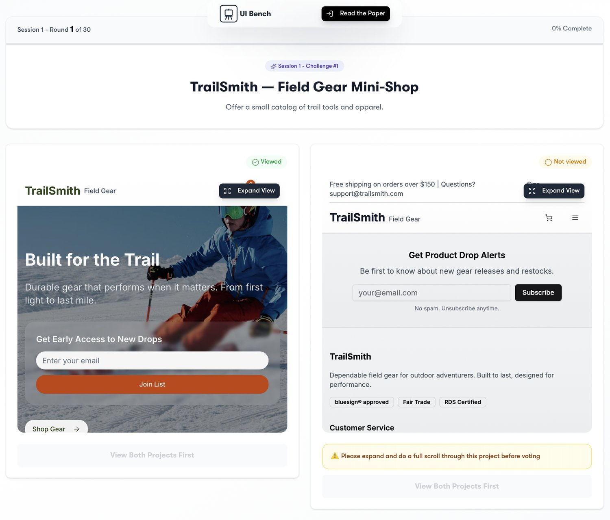
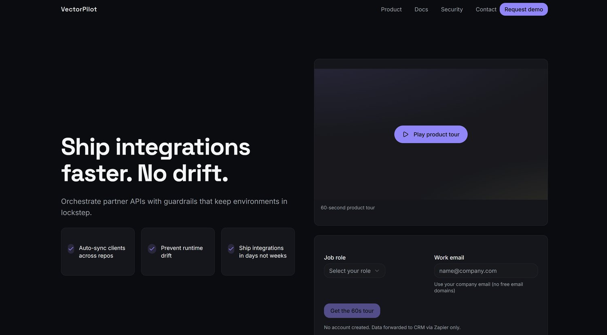
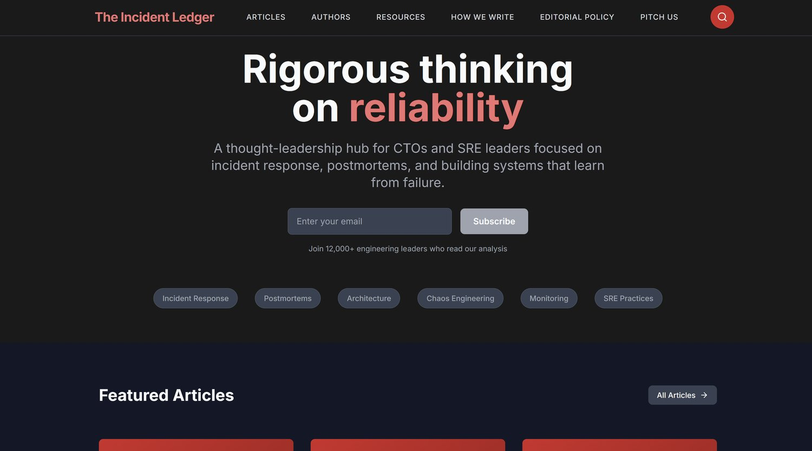
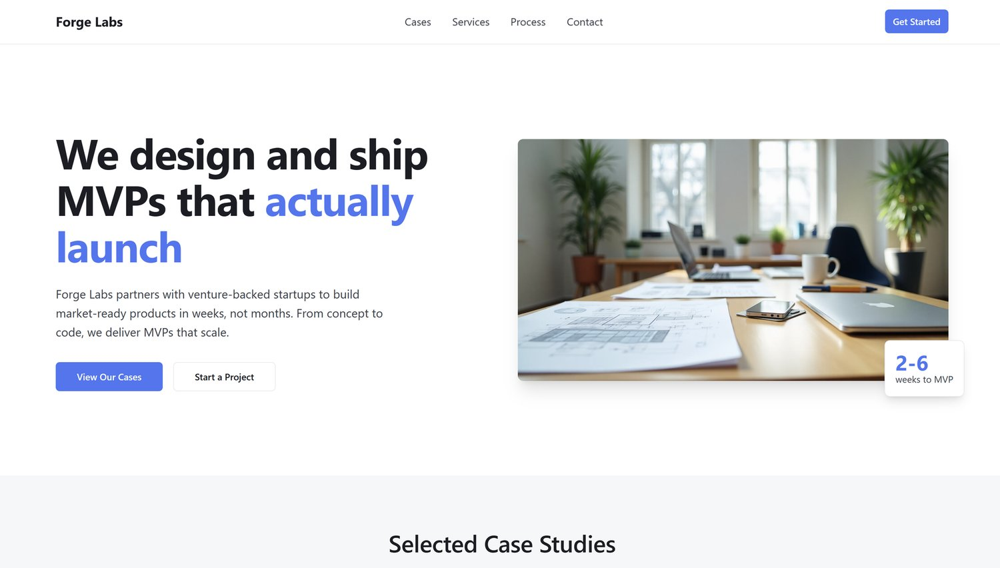
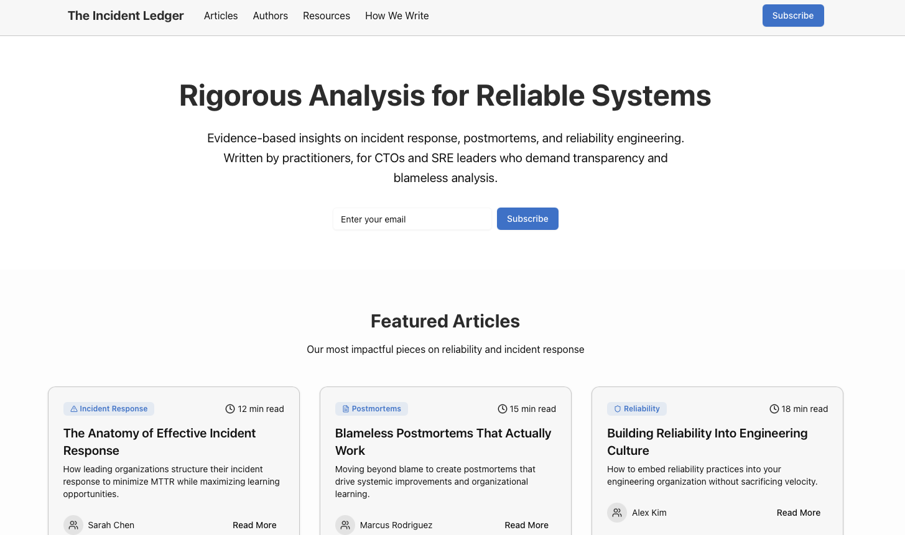

UI-Bench: A Benchmark for Evaluating Design Capabilities of AI Text-to-App Tools
AI text-to-app tools promise high quality applications and websites in minutes, yet no public benchmark rigorously verifies those claims. We introduce UI-Bench, the first large-scale benchmark that evaluates visual excellence across competing AI text-to-app tools through expert pairwise comparison. Spanning 10 tools, 30 prompts, 300 generated sites, and 4000+ expert judgments, UI-Bench ranks systems with a TrueSkill-derived model that yields calibrated confidence intervals. UI-Bench establishes a reproducible standard for advancing AI-driven web design. We release (i) the complete prompt set, (ii) an open-source evaluation framework, and (iii) a public leaderboard. The generated sites rated by participants will be released soon.
Low-code and no-code development platforms have emerged as powerful prototyping tools, allowing organizations to rapidly create applications with minimal coding effort. This wave has accelerated the market for AI text-to-app tools. TechRadar’s 2025 survey alone “tested, rated, and ranked” the nine best AI tools out of more than eighty tools reviewed [Williams, 2025]. While marketing copy promises “professional quality in one click,” most discourse remains anecdotal, consisting mostly of feature lists and speed claims. They offer little systematic evidence about the visual quality these tools actually produce.
低代码与无代码开发平台已成为强有力的原型工具，使各类组织只需极少的编码投入即可快速创建应用。这一浪潮加速了 AI 文本到应用（text-to-app）工具市场的成形。仅 TechRadar 2025 年的调研就在其评测的八十余款工具中「测试、打分并排序」出九款最佳 AI 工具 [Williams, 2025]。尽管营销话术承诺「一键生成专业品质」，多数讨论仍停留在轶事层面，主要由功能罗列与速度宣称构成，几乎未提供关于这些工具实际产出视觉质量的系统性证据。
Visual excellence directly impacts business outcomes. The seminal Stanford Web Credibility study found that 46% user comments cited a site’s look and feel when judging credibility [Fogg et al., 2001], and other studies support this fact as well [Robins and Holmes, 2008]. Empirical UX studies show that both high visual intensity (e.g., animation, flashing, cluttered interfaces) and excessive content volume impair user engagement; visual overload triggers strong negative reactions before conversions climb, and simpler, content-light landing pages consistently convert better than dense, information-heavy versions [Jankowski et al., 2019; Dvir and Gafni, 2018]. For AI tools to succeed in market adoption, their output must excel on these perception-critical dimensions.
视觉水准直接影响商业结果。斯坦福 Web 可信度研究的开创性工作发现，用户在判断网站可信度时有 46% 的评价提及网站的外观与观感 [Fogg 等, 2001]，其他研究也支持这一结论 [Robins 与 Holmes, 2008]。实证 UX 研究表明，过高的视觉强度（例如动画、闪烁、界面拥挤）与过大的内容体量都会损害用户参与度：视觉过载会在转化率上升之前就引发强烈的负面反应，而简洁、内容轻量的着陆页始终比密集、信息过载的版本转化更好 [Jankowski 等, 2019; Dvir 与 Gafni, 2018]。AI 工具要想在市场采纳上取得成功，其产出必须在这些关乎感知的维度上表现优异。
Aesthetic quality lacks a single objective ground truth, and is fundamentally perception-driven [Lavie and Tractinsky, 2004; Moshagen and Thielsch, 2010; Ngo et al., 2003]. Previous HCI work reports only moderate agreement across raters and substantial unexplained variance in aesthetic evaluations [von Wangenheim et al., 2018; Reinecke et al., 2013]. Public, non-blind crowd voting also suffers from social-influence herding: a single early up-vote can raise a post’s final score by about 25% [Muchnik et al., 2013].
美学质量不存在唯一的客观真值，本质上由感知驱动 [Lavie 与 Tractinsky, 2004; Moshagen 与 Thielsch, 2010; Ngo 等, 2003]。已有 HCI 工作报告称，评分者之间的一致性只达到中等水平，美学评估中还存在大量无法解释的方差 [von Wangenheim 等, 2018; Reinecke 等, 2013]。公开的、非盲态的众包投票还受社会影响下的从众效应干扰：一个早先的点赞就能把某个帖子的最终得分抬高约 25% [Muchnik 等, 2013]。
For this study, we use blinded pairwise judgements from expert designers as the primary endpoint. We omit automated image proxies as primary metrics because their alignment with human aesthetic preference is weak in our setting. For instance, though FID and CLIP are widely used automated proxies for image quality and alignment [Heusel et al., 2017; Radford et al., 2021], recent work shows such proxies can mis-rank or even contradict human preferences—especially for aesthetics and design-heavy images [Jayasumana et al., 2024; Kirstain et al., 2023; Xu et al., 2023; Lee et al., 2023]; see §2.3 for a survey and scope caveats. Procedural details for our pairwise protocol and ranking appear in §3.
在本研究中，我们以专家设计师的盲态成对判断作为主要终点。我们不把自动化图像代理指标作为主要度量，因为在我们的设定下它们与人类美学偏好的一致性较弱。例如，尽管 FID 与 CLIP 被广泛用作图像质量与对齐的自动代理指标 [Heusel 等, 2017; Radford 等, 2021]，近期工作表明这类代理指标可能给出错误的排序，甚至与人类偏好相悖——对美学与设计密集型图像尤为如此 [Jayasumana 等, 2024; Kirstain 等, 2023; Xu 等, 2023; Lee 等, 2023]；相关综述与适用范围的限定见 §2.3。我们的成对协议与排序流程的细节见 §3。
UI-Bench: a fully reproducible protocol for assessing visual design quality of AI text-to-app tools across realistic prompt categories.
1. UI-Bench：一套完全可复现的协议，用于跨真实提示词类别评估 AI 文本到应用工具的视觉设计质量。
Statistical Framework: an adapted TrueSkill model that delivers stable rankings with 95% confidence intervals from sparse pairwise votes.
2. 统计框架：一个经过适配的 TrueSkill 模型，能从稀疏的成对投票中给出稳定的排序及 95% 置信区间。
Public Resources: a public leaderboard.
3. 公开资源：一个公开的排行榜。
UI-Bench closes the gap between feature-checklist reviews and academic usability tests by supplying the first benchmark that directly measures professional-grade visual design quality in AI text-to-app tools.
UI-Bench 弥合了功能清单式评测与学术可用性测试之间的空白，提供了首个直接度量 AI 文本到应用工具专业级视觉设计质量的基准。
LLM Benchmarks. Static, ground-truth benchmarks such as MMLU [Hendrycks et al., 2021], HellaSwag [Zellers et al., 2019], GSM-8K [Cobbe et al., 2021], FinanceQA [Mateega et al., 2025], AGIEval [Zhong et al., 2023], BIG-Bench [Srivastava et al., 2023], and HumanEval [Chen et al., 2021] dominate language-model evaluation. Alongside static benchmarks, recent work has relied on human or LLM-judge based pairwise evaluations: MT-Bench [Zheng et al., 2023] and AlpacaEval [Dubois et al., 2024] use LLMs as judges on curated prompts, while Chatbot Arena [Chiang et al., 2024] aggregates crowd pairwise votes with an Bradley-Terry-style rating for leaderboards.
大模型基准。MMLU [Hendrycks 等, 2021]、HellaSwag [Zellers 等, 2019]、GSM-8K [Cobbe 等, 2021]、FinanceQA [Mateega 等, 2025]、AGIEval [Zhong 等, 2023]、BIG-Bench [Srivastava 等, 2023] 与 HumanEval [Chen 等, 2021] 等静态真值基准主导着语言模型评测。除静态基准外，近期工作还依赖人工或大模型裁判的成对评测：MT-Bench [Zheng 等, 2023] 与 AlpacaEval [Dubois 等, 2024] 在精选提示词上用大模型作裁判，而 Chatbot Arena [Chiang 等, 2024] 则以 Bradley-Terry 风格的评分聚合众包成对投票来生成排行榜。
Most recent work targets designcode or webpagecode generation and leans on automatic checks rather than blinded expert preference on finished designs. Web2Code releases a large webpagecode dataset and evaluation suite with rendered-image comparison and GPT-4V scoring [Yun et al., 2024]. WebCode2M provides 2.56M real design–code pairs and establishes a benchmark for training and evaluating models in automated webpage code generation, prioritizing scalability over aesthetic quality [Gui et al., 2025]. DesignBench frames front-end generation/edit/repair across React/Vue/Angular with programmatic evaluation [Xiao et al., 2025]. FrontendBench automates sandboxed tests and reports 90.45% agreement with experts on specific UI behaviors, not holistic taste [Zhu et al., 2025]. WebGen-Bench is the closest task analogue: it generates full sites from instructions, verifies functionality via a navigation agent, and grades appearance with GPT-4o (1–5); it does not use blinded expert pairwise judgments [Lu et al., 2025]. In terms of human validation, Design2Code is closest. It curates 484 webpages and validates visual-similarity metrics against human ratings, but it benchmarks multimodal language model (MLLM) capabilities by reproducing webpages from original screenshots rather than by comparing preferences between competing tools [Si et al., 2025]. Though existing benchmarks emphasize functionality, fidelity, and code similarity; none adopt blinded expert pairwise preference to evaluate visual design quality, and none evaluate AI text-to-app tools.
多数近期工作瞄准设计代码或网页代码的生成，倚重自动检查，而非在成品设计上做盲态专家偏好评测。Web2Code 发布了大规模网页代码数据集与评测套件，采用渲染图像比对与 GPT-4V 打分 [Yun 等, 2024]。WebCode2M 提供 256 万条真实设计—代码对，并建立了自动化网页代码生成模型的训练与评测基准，其取向是可扩展性优先于美学质量 [Gui 等, 2025]。DesignBench 覆盖 React/Vue/Angular 的前端生成、编辑与修复，采用程序化评测 [Xiao 等, 2025]。FrontendBench 自动化沙箱测试，报告在特定 UI 行为上与专家达到 90.45% 的一致性，但这并非整体性品味 [Zhu 等, 2025]。WebGen-Bench 在任务形态上最为接近：它从指令生成完整站点，用导航智能体验证功能，并以 GPT-4o 按 1–5 分评定外观；它并未使用盲态专家成对判断 [Lu 等, 2025]。在人工验证方面，Design2Code 最为接近：它精选 484 个网页，并对照人类评分校验视觉相似度指标，但它衡量的是多模态语言模型（MLLM）依据原始截图复现网页的能力，而非在不同工具之间比较偏好 [Si 等, 2025]。尽管现有基准强调功能性、保真度与代码相似度，却没有一个采用盲态专家成对偏好来评测视觉设计质量，也没有一个评测 AI 文本到应用工具。
Generative-image quality is typically scored by Inception Score (IS) [Salimans et al., 2016], Fréchet Inception Distance (FID) [Heusel et al., 2017], or CLIP-based similarity [Hessel et al., 2021]. Classical GUI–layout heuristics compute rule-based scores for symmetry, balance, and rhythm [Ngo et al., 2003]; later work trains neural predictors on curated photography and poster datasets [Lu et al., 2014; O’Donovan et al., 2011].
生成图像的质量通常用 Inception Score（IS）[Salimans 等, 2016]、Fréchet Inception Distance（FID）[Heusel 等, 2017] 或基于 CLIP 的相似度 [Hessel 等, 2021] 来评分。经典 GUI 布局启发式则对对称性、均衡与节奏计算基于规则的分数 [Ngo 等, 2003]；后续工作在精选的摄影与海报数据集上训练神经预测器 [Lu 等, 2014; O’Donovan 等, 2011]。
For multi-section webpages (rather than single-image quality), automated aesthetic scorers exhibit limited cross-dataset generalization. Domain-tailored predictors for webpage aesthetics can achieve promising in-domain correlations (e.g., Webthetics reports ) [Dou et al., 2019]; however, correlation on a single dataset does not guarantee faithful pairwise rankings or robustness across datasets. Similarly, generic proxies such as FID and CLIP-based scores—while widely used [Heusel et al., 2017; Radford et al., 2021; Hessel et al., 2021]—have been shown to misalign with, and sometimes contradict, human preferences for aesthetics and design-heavy images [Jayasumana et al., 2024; Kirstain et al., 2023; Xu et al., 2023; Lee et al., 2023]. We therefore treat automated scores as ancillary diagnostics, and select blinded expert pairwise judgement as our primary endpoint (see §1.3).
对多分区网页（而非单图质量），自动化美学打分器的跨数据集泛化能力有限。面向网页美学的领域定制预测器可以在域内取得可观的相关性（例如 Webthetics 报告 ）[Dou 等, 2019]；然而，在单个数据集上的相关性并不能保证忠实的成对排序或跨数据集的稳健性。类似地，FID 与基于 CLIP 的分数等通用代理指标虽被广泛使用 [Heusel 等, 2017; Radford 等, 2021; Hessel 等, 2021]，但已被证明与人类对美学及设计密集型图像的偏好不一致，有时甚至相悖 [Jayasumana 等, 2024; Kirstain 等, 2023; Xu 等, 2023; Lee 等, 2023]。因此我们把自动分数作为辅助性诊断，并选择盲态专家成对判断作为主要终点（见 §1.3）。
None of the above benchmarks evaluate the holistic UI and UX quality of AI tools, leaving researchers and practitioners without a standard ranking metric.
上述基准均未评估 AI 工具的整体 UI 与 UX 质量，使研究者与从业者在标准排序指标上无所依凭。
We chose pairwise comparison because absolute ratings are noisy: scale interpretation and anchoring make designers disagree. Thurstone’s comparative-judgment theory offers a clean alternative to scaled methods, with previous deployments of adaptive comparative judgment reporting very high rank-order reliability (0.95–0.97) [Pollitt, 2012; Whitehouse and Pollitt, 2012]. Early psychometrics formalised preference as comparative judgment [Thurstone, 1927]; the Bradley–Terry model (BT) [Bradley and Terry, 1952] and Bayesian extensions such as TrueSkill [Herbrich et al., 2006] remain standard for converting pairwise outcomes into system skill estimates. This method also scales: Chatbot Arena logged 240k+ human comparisons and produced a stable BT leaderboard for 50+ LLMs [Chiang et al., 2024], with formal convergence analysis reported in that work. UI-Bench therefore collects only binary designer preferences and fits a TrueSkill model; implementation details are provided in §3.2.
我们选择成对比较，是因为绝对评分噪声很大：量表解读与锚定效应会导致设计师意见分歧。Thurstone 的比较判断理论为量表法提供了一个干净的替代方案，此前自适应比较判断的部署报告了很高的排序信度（0.95–0.97）[Pollitt, 2012; Whitehouse 与 Pollitt, 2012]。早期心理测量学把偏好形式化为比较判断 [Thurstone, 1927]；Bradley–Terry 模型（BT）[Bradley 与 Terry, 1952] 以及 TrueSkill [Herbrich 等, 2006] 等贝叶斯扩展，至今仍是把成对结果转换为系统能力估计的标准方法。该方法也具备可扩展性：Chatbot Arena 记录了 24 万次以上的人类比较，并为 50 多个大模型产出稳定的 BT 排行榜 [Chiang 等, 2024]，该工作还报告了形式化的收敛性分析。因此，UI-Bench 只收集设计师的二元偏好，并拟合 TrueSkill 模型；实现细节见 §3.2。
We define design quality as the probability that a professional designer prefers layout A over layout B on the client-delivery question:
我们把设计质量定义为专业设计师在客户交付问题下更偏好布局 A 而非布局 B 的概率：
“Which project would you be more likely to deliver to a client?”
「你更可能把哪个项目交付给客户？」
This single forced choice captures holistic judgement across UI and UX completeness without a rigid rubric. Because professional designers are trained evaluators, aggregating their independent judgements via expert panels is a validated approach for ranking creative work [Amabile, 1982; Amabile, 1996]. We use expert comparative judgement: designers make binary pairwise choices on the client-delivery question. This method is established in educational assessment with high reliability [Pollitt, 2012], and the same pairwise-preference framing also underlies RLHF work [Christiano et al., 2017].
这一单一的强制选择在无僵化量规的前提下捕捉了跨越 UI 与 UX 完整性的整体判断。由于专业设计师是受过训练的评估者，通过专家小组聚合他们的独立判断，是对创造性工作排序的一种经过验证的方法 [Amabile, 1982; Amabile, 1996]。我们采用专家比较判断：设计师就客户交付问题做出二元成对选择。该方法在教育评估中已被确立并具有高信度 [Pollitt, 2012]，同样的成对偏好框架也构成了 RLHF 工作的基础 [Christiano 等, 2017]。
A generic “Which one do you like more?” question risks collapsing professional standards into personal taste. To ensure judgments are tied to design practice, UI-Bench frames comparisons as a client-delivery question. This anchors evaluations on holistic UI and UX quality within a professional context.
笼统地问「你更喜欢哪一个？」有可能把专业标准坍缩为个人口味。为使判断紧扣设计实践，UI-Bench 把比较框定为一个客户交付问题，从而把评估锚定在专业语境下的整体 UI 与 UX 质量上。
Our protocol incorporates several design decisions that address known shortcomings:
我们的协议纳入了若干针对已知缺陷的设计决策：
Full-view requirement. Raters must view the entire webpage in fullscreen mode before voting, ensuring assessments reflect the complete composition rather than a cropped hero or single section.
• 完整浏览要求。评分者必须在全屏模式下浏览整个网页后才能投票，确保评价反映完整构图，而非被裁切的首屏或单个分区。
Prompt standardization. UI-Bench uses synthetically generated prompts across a range of situations and tasks so that outcomes reflect tool capability, not rater creativity in crafting prompts. See §4.1 for prompt generation protocol.
• 提示词标准化。UI-Bench 使用跨多种情境与任务合成的提示词，使结果反映工具能力，而非评分者撰写提示词的创意；提示词生成协议见 §4.1。
Blinding and quality controls. Randomized left–right placement, hidden tool identities, and split voting sessions further reduce bias and noise relative to open crowd arenas.
• 盲态与质量控制。随机化的左右位置、隐藏工具身份，以及拆分投票场次，相比开放的众包竞技场进一步降低偏差与噪声。
These design decisions incrementally add rigor beyond prior arena-style studies and establish UI-Bench as a reproducible standard for evaluating the visual design quality of AI text-to-app tools.
这些设计决策在既有竞技场式研究之上逐步增添了严谨性，使 UI-Bench 成为评估 AI 文本到应用工具视觉设计质量的可复现标准。
We run a continuous arena where each vote compares two tools on one prompt for a single expert. Prompt selection has two phases: a base-coverage phase that shows each expert all 30 prompts exactly once (by round 30), followed by an adaptive phase that samples from the 30 prompts based on a score calculated by recency, uncertainty, and the score gap between tools. We draw uniformly from this top-5. Pair selection is not uniform: we score every candidate pair by a weighted blend of exposure balance, opponent novelty, uncertainty , and TrueSkill match quality, then apply penalties for pairs already seen by the expert, recent cooldown, repeat-cap exceedance, and hot-tool over-exposure. We pick the highest-scoring pair with deterministic tie-breakers (lower pair count, then lower max exposure). Tools are rated per prompt; the headline score for each tool is the mean TrueSkill across the 30 prompts.
我们运行一个持续进行的竞技场，每次投票由一位专家在一个提示词上比较两个工具。提示词选取分两个阶段：基础覆盖阶段使每位专家到 30 轮时恰好看过全部 30 个提示词各一次；其后是自适应阶段，依据由时效性、不确定性与工具间分数差计算得到的分数，从 30 个提示词中采样，我们在得分前 5 的候选中均匀抽取。配对并非均匀：我们按曝光均衡、对手新颖性、不确定性 与 TrueSkill 匹配质量的加权组合为每个候选配对打分，再对专家已见过、处于近期冷却期、超出重复上限以及热门工具过度曝光的配对施加惩罚。我们以确定性打破平局的规则（先比较配对计数更小者，再比较最大曝光更小者）选出得分最高的配对。工具按提示词分别评级；每个工具的头条分数是其 TrueSkill 在 30 个提示词上的均值。
For each prompt, every tool starts at and . After each 1-v-1 outcome, we update the two prompt-specific ratings within a TrueSkill environment (no drift, no draws) [Herbrich et al., 2006]. The global tool score is the mean of prompt-level across the 30 prompts.
对每个提示词，每个工具从 与 起步。每次 1 对 1 结果之后，我们在 TrueSkill 环境中更新两个提示词专属的评级（无漂移、无平局）[Herbrich 等, 2006]。工具的全局分数是其提示词级 在 30 个提示词上的均值。
We hand selected and invited the experts in this study on the basis of having professional UI and UX experience as a designer, web developer, researcher, or other relevant profession.
我们以是否具备作为设计师、Web 开发者、研究者或其他相关职业的专业 UI 与 UX 经验为依据，人工遴选并邀请了本研究中的专家。
Our panel spans multiple roles (multi-select; totals exceed 100%): Designers (65.5%, 127), Web Developers (57.2%, 111), Researchers (60.3%, 117), Other (7.2%, 14). When asked whether they had previously used AI tools for creating applications or websites, 10.8% (21) answered yes and 89.2% (173) answered no.
我们的评审组横跨多种角色（多选，合计超过 100%）：设计师（65.5%，127 人）、Web 开发者（57.2%，111 人）、研究者（60.3%，117 人）、其他（7.2%，14 人）。当被问及此前是否用过 AI 工具创建应用或网站时，10.8%（21 人）回答是，89.2%（173 人）回答否。
We generated 30 prompts across five categories (6 per category): Marketing/Landing, Editorial/Blog, Portfolio/Case Study, E-commerce, and Local/Service. Within each category we include 4 websites and 2 webapps. Websites are read-mostly marketing or informational pages; simple forms are permitted, but no authentication or persistent data storage is included. Webapps are stateful experiences with saved data and at least two screens (e.g., list/table plus create/edit form), incorporating basic validation and empty/loading/error states. Authentication flows were excluded to avoid confounding design evaluation with account-management UX.
我们生成了 30 个提示词，横跨五个类别（每类 6 个）：营销/着陆页、编辑/博客、作品集/案例研究、电商、本地/服务。每个类别内包含 4 个网站与 2 个 Web 应用。网站是以只读为主的营销或信息型页面，允许出现简单表单，但不包含认证或持久化数据存储。Web 应用则是有状态、会保存数据且至少含两个界面的体验（例如列表/表格加上创建/编辑表单），并纳入基本的校验以及空态、加载态与错误态。我们排除了认证流程，以免把账户管理类 UX 与设计评估混在一起。
Prompts were synthetically generated with GPT-5 (Thinking) using ChatGPT on August 20, 2025. We report the model, interface, and date to document the generation conditions.
提示词于 2025 年 8 月 20 日通过 ChatGPT 使用 GPT-5（Thinking）合成生成。我们报告所用模型、界面与日期，以记录生成条件。
We instructed the model to: (i) write realistic client briefs of 150–180 words; (ii) specify a primary goal/CTA (lead, purchase, booking, subscribe, donate, apply, RSVP, informational); (iii) include a one-sentence brand vibe (1–2 adjectives); (iv) optionally add non-visual constraints (e.g., “include pricing tiers” or “include a contact form”); (v) avoid layout directives and authentication/login requirements. The exact authoring prompt is provided in Appendix A.
我们指示模型：(i) 撰写 150–180 词的真实客户简报；(ii) 明确一个主要目标/CTA（获客、购买、预订、订阅、捐赠、申请、回复邀请、信息获取）；(iii) 包含一句品牌调性描述（1–2 个形容词）；(iv) 可选地添加非视觉约束（例如「包含定价档位」或「包含一个联系表单」）；(v) 避免布局指令与认证/登录要求。撰写所用的完整提示词见附录 A。
We applied light editorial review, requiring each prompt to be at least 150 words, maintain diverse category coverage with correct counts, and include a coherent CTA. Prompts that failed these checks were regenerated.
我们施加了轻度的人工编辑审阅，要求每个提示词至少 150 词、保持类别覆盖多样且数量正确、并包含一致的 CTA。未通过检查的提示词被重新生成。
We release the final prompts (title, type, sector, goal, scenario, vibe, constraints) in Appendix B. Future versions of this benchmark will include a scripted generation pipeline.
我们在附录 B 中发布最终的提示词（标题、类型、行业、目标、情境、调性、约束）。本基准的未来版本将包含脚本化的生成流程。
We evaluated ten anonymized AI text-to-app tools, representing a mix of leading commercial platforms: v0 by Vercel, Bolt, Orchids, Lovable, Replit, Figma Make, Base44 by Wix, Magic Patterns, Same.new, and Create Anything. For consistency, all generations were produced between August 20th–22, 2025. Each tool was run with its default configuration settings, without manual intervention or prompt engineering.
我们评测了十款匿名化的 AI 文本到应用工具，涵盖一批领先的商业平台：v0 by Vercel、Bolt、Orchids、Lovable、Replit、Figma Make、Base44 by Wix、Magic Patterns、Same.new 与 Create Anything。为保证一致性，所有生成均在 2025 年 8 月 20 日至 22 日之间完成。每个工具均以其默认配置运行，未作人工干预或提示词工程。
The authors generated all designs with a 60-minute time limit per prompt per tool. Each tool received up to two independent one-shot attempts per prompt. For each fresh attempt, we permitted up to two repair passes to fix blocking errors that prevented rendering. We stopped at the first usable output (the full page displaying). This lenient protocol ensured every tool produced at least one functional UI. Some tools (e.g., Same.new) intermittently stalled during generation, typically on file-read steps, consistent with brittle agent orchestration or system prompts.
作者按每个提示词、每个工具 60 分钟的时间上限生成全部设计。每个工具对每个提示词最多有两次独立的一次性尝试。对每一次新的尝试，我们允许最多两轮修复，以消除导致无法渲染的阻断性错误。我们在得到第一个可用输出（整页可正常显示）时停止。这一宽松协议确保每个工具都至少产出一个可用的 UI。部分工具（例如 Same.new）在生成过程中会间歇性卡住，通常发生在文件读取步骤，这与脆弱的智能体编排或系统提示词相符。
Websites are displayed in iFrames, with sanitized URLs to prevent tool identification.
网站以 iframe 展示，并对 URL 做脱敏处理，以防止识别工具身份。
Experts received a special code to log in to the study, ensuring only vetted participants could participate. We collected the following from experts before allowing them to vote: first name, last name, profession (Designer, Web Developer, Researcher, or Other), and whether they have previously used an AI website generating tool before.
专家收到一个专用代码以登录本研究，确保只有经过审核的参与者才能加入。在允许专家投票之前，我们收集了以下信息：名字、姓氏、职业（设计师、Web 开发者、研究者或其他），以及此前是否使用过 AI 网站生成工具。

图 1：UI-Bench 中使用的比较界面示例。评分者在盲态布局下浏览两个网页，位置随机化，并要求完整浏览。
Each comparison is presented in a controlled, blinded UI. As shown in Figure 1, we required (i) a full-view requirement, (ii) incorporate split voting sessions, (iii) hide tool identities, (iv) standardize prompts, and (v) randomize left-right placement.
每次比较都在受控的盲态界面中呈现。如图 1 所示，我们要求 (i) 完整浏览、(ii) 采用拆分投票场次、(iii) 隐藏工具身份、(iv) 提示词标准化，以及 (v) 左右位置随机化。
For each pair of designs generated for a prompt, raters answer a single forced-choice question as described in §3.1. The following instructions are shown to experts before they started each voting session:
对为某个提示词生成的一对设计，评分者需回答 §3.1 所述的单一强制选择题。专家在每次投票场次开始前会看到以下指示：
Responses were binary: "Vote for this Project" was presented under both left and right options. No tie option was provided.
回答是二元的：左右两个选项下方都显示「为这个项目投票」。不提供平局选项。
Each expert was instructed to vote on 60 matches, administered in two sessions of 30 votes each, with an optional third bonus session for up to 90 total votes. Breaks were permitted between sessions, and a one-day interval between sessions was recommended to maintain attention. As participation was voluntary, the 60-vote target served as guidance rather than a strict requirement.
每位专家被指示完成 60 场比较，分两个场次各 30 票进行，并可额外参加第三个奖励场次，使总票数最多达 90 票。场次之间允许休息，并建议两场之间间隔一天以保持注意力。由于参与是自愿的，60 票的目标属于指引而非硬性要求。
Table 1 reports the overall leaderboard aggregated across blinded pairwise matches, and unique tool comparisons. Ratings are reported as posterior means () under the TrueSkill model, alongside posterior uncertainty (), 95% credible intervals, and empirical win rates.
表 1 报告了在 场盲态成对比较与 个唯一工具对比上聚合得到的总体排行榜。评分以 TrueSkill 模型下的后验均值（）报告，同时给出后验不确定性（）、95% 可信区间与经验胜率。
表 1：总体排行榜结果（ 场唯一比较）
| Rank | Tool | Rating () | Uncertainty + 95 % CI | Win Rate |
|---|---|---|---|---|
| 1 | Orchids | 30.12 | [26.61, 33.55] | 67.5 % |
| 2 | Figma Make | 27.46 | [24.11, 30.81] | 57.1 % |
| 3 | Lovable | 27.14 | [23.77, 30.51] | 54.8 % |
| 4 | Anything | 25.46 | [22.15, 28.77] | 51.2 % |
| 5 | Bolt | 24.44 | [21.15, 27.73] | 48.9 % |
| 6 | Magic Patterns | 24.23 | [20.90, 27.56] | 47.0 % |
| 7 | Same.new | 23.57 | [20.24, 26.90] | 45.8 % |
| 8 | Base44 by Wix | 23.47 | [20.16, 26.78] | 47.4 % |
| 9 | v0 | 22.24 | [18.87, 25.61] | 41.2 % |
| 10 | Replit | 20.95 | [17.56, 24.34] | 38.9 % |
Orchids leads with a mean rating of 30.12 and a 67.5% win rate, substantially ahead of the second-ranked system (Figma Make, =27.46, 57.1%). Lovable rounds out the top three with =27.14 and a 54.8% win rate. Mid-tier tools cluster closely: Anything, Bolt, and Magic Patterns all exhibit overlapping credible intervals around , suggesting no statistically significant separation among them. Lower-ranked systems (Base 44 by Wix, Same.new, v0, and Replit) fall below a rating of 24, indicating consistent underperformance against the stronger tools.
Orchids 以 30.12 的平均评分与 67.5% 的胜率居首，大幅领先于排名第二的系统（Figma Make，=27.46，57.1%）。Lovable 以 =27.14 与 54.8% 的胜率位列第三。中游工具高度聚集：Anything、Bolt 与 Magic Patterns 的可信区间在 附近相互重叠，说明它们之间没有统计上显著的区分。排名靠后的系统（Base 44 by Wix、Same.new、v0 与 Replit）评分低于 24，表明它们相对更强的工具持续处于劣势。
These results establish a clear separation between the leading systems and the trailing cluster.
这些结果在领先系统与尾部集群之间确立了清晰的区分。
Several tools likely share foundation models, yet outputs diverge. Lower performers converged on generic templates, with several tools using call-to-action buttons colored in a generic blue repeated across several websites (for instance, see prompt #7 for v0, and prompt #17 for Anything in Appendix D), repetitive card grids, minimal interaction, weak responsiveness. Top tools showed deliberate layout planning and asset curation: distinctive typography systems, coherent color programs, higher-quality imagery, and multi-section narratives with clear flow. They also produced working controls, navigation, and subtle animations with fewer broken states. The gap points to differences in prompt handling, template libraries, agent-orchestration techniques, post-processing, and asset pipelines rather than model choice alone.
若干工具很可能共享基础模型，产出却大相径庭。表现较差者趋于收敛到通用模板，多个工具在若干网站上使用重复的通用蓝色行动号召按钮（例如见附录 D 中 v0 的提示词 #7 与 Anything 的提示词 #17）、重复的卡片网格、极少的交互与薄弱的响应式。顶尖工具则表现出经过考量的布局规划与素材选取：独特的字体排印系统、连贯的色彩方案、更高质量的图像，以及层次清晰的多分区叙事。它们还产出了可用的控件、导航与克制的动效，破损状态更少。这一差距指向提示词处理、模板库、智能体编排技术、后处理与素材管线的差异，而不只是模型选择。
We make no claims on AI failure modes related to losses clustering around: typography, spacing, poor hierarchy, technically correct but sterile pages without brand voice, uneven padding, mixed iconography, or naive palette and contrast choices that reduce readability or appeal. Future studies will account for expert labels when judging designs.
我们不对 AI 失效模式作出断言；相关的落败集中在以下方面：字体排印、间距、层级薄弱，以及技术上正确但缺乏品牌声音的生硬页面、不均匀的内边距、混用的图标风格，或降低可读性与吸引力的幼稚配色与对比选择。未来研究将在评判设计时纳入专家标注。
Experts evaluated websites and webapps generated by AI tools between a set period of dates. This benchmark covers a set of leading commercially available AI tools at the time of testing; future releases with new capabilities remain unassessed.
专家评估的是 AI 工具在一段固定日期区间内生成的网站与 Web 应用。本基准覆盖的是测试时点上一批领先的商用 AI 工具；未来发布的新能力尚未被评估。
We note that the prompts used for Figma make were not the exact same prompts as those used for all other tools. Figma’s tool has a 500 character maximum input limit, while our prompts were generally over 150+ words. We condensed all prompts via ChatGPT by asking it to "Summarize each of these prompts to 500 characters." We release all sumarized prompts given to Figma make in Appendix B. We included Figma’s tool despite this limitation because of its relevance among professional designers and AI developers.
我们注意到，用于 Figma Make 的提示词与用于其他所有工具的提示词并不完全相同。Figma 的工具有 500 字符的输入上限，而我们的提示词一般超过 150 词。我们通过 ChatGPT 把所有提示词压缩，要求它「把以下每个提示词概括到 500 字符以内」。我们在附录 B 中发布提供给 Figma Make 的全部压缩后提示词。尽管存在这一限制，我们仍纳入了 Figma 的工具，因为它在专业设计师与 AI 开发者中具有相关性。
UI-Bench isolates visual craft, which includes layout, typography, colour, hierarchy, and intentionally ignores UX metrics such as load time, accessibility, or code quality. We do not include a human-designed baseline in this release; therefore, we make no claims about parity with professional designers. Results should be interpreted as relative rankings among AI tools, not absolute judgments of human-level quality. Additionally, because the evaluator pool is dominated by English-speaking professionals, the results may reflect culturally specific aesthetics. Prompts and interfaces are English-only, potentially under-representing designs optimised for other languages or reading directions.
UI-Bench 只隔离考察视觉工艺，包括布局、字体排印、色彩与层级，并有意识地忽略加载时间、无障碍性或代码质量等 UX 指标。本版本未纳入人类设计基线，因此我们对是否与专业设计师持平不作断言。结果应被解读为 AI 工具之间的相对排序，而非对人类水平质量的绝对判断。此外，由于评审者池以英语母语的专业人士为主，结果可能反映特定文化的美学偏好。提示词与界面均为英文，可能低估了面向其他语言或阅读方向优化的设计。
Our findings reflect AI tools available in 2025 and desktop layouts, so they may not generalize to future tool releases, mobile layouts, or print media. Judgements from seasoned professionals reflect industry standards of polish, but expert taste correlates only moderately with lay-user appeal [Ngo et al., 2003]. Consumer perceptions can be influenced more by brand familiarity or novelty than by subtle typographic refinements. Next steps include testing AI generated designs against human-made designs to measure effect sizes versus AI, and a failure-mode dataset with a public codebook (typography, balance, color/contrast, detail work, responsiveness, brief adherence, resonance), and expert gold labels.
我们的发现反映的是 2025 年的 AI 工具与桌面端布局，因而未必能推广到未来的工具版本、移动端布局或印刷媒介。资深专业人士的判断体现了行业对完成度的标准，但专家品味与外行用户吸引力的相关性只达到中等 [Ngo 等, 2003]。消费者感知更容易受品牌熟悉度或新鲜感影响，而非细微的字体排印打磨。后续工作包括：把 AI 生成的设计与人类制作的设计对照测试，以度量相对 AI 的效应量；构建一个带公开编码手册的失效模式数据集（字体排印、均衡、色彩/对比、细节处理、响应式、简报遵循度、共鸣感），并加入专家金标。
In this paper, we introduce UI-Bench, a blinded, expert pairwise benchmark anchored to a client-delivery question for AI text-to-app tools. The protocol uses standardized prompts, a full-view requirement, and TrueSkill-based ranking with uncertainty. Across 4,000+ matches, we observe clear separation among tools and identify orchestration choices and potential failure modes that could explain preference gaps. We release prompts and host a public leaderboard to enable further work. Generated sites rated by participants will be released soon.
本文介绍 UI-Bench，一个以客户交付问题为锚点的、面向 AI 文本到应用工具的盲态专家成对基准。该协议采用标准化提示词、完整浏览要求，以及带不确定性估计的 TrueSkill 排序。在 4,000 余场比较中，我们观察到工具之间存在清晰的区分，并识别出可以解释偏好差距的编排选择与潜在失效模式。我们发布提示词并托管公开排行榜，以支撑后续工作。参评者所评价的生成站点也将很快发布。
We thank the expert panel for generously contributing their time and judgment; their participation made large-scale, blinded data collection feasible. We also appreciate the early readers & researchers whose feedback improved the study and materials.
我们感谢专家评审组慷慨地贡献时间与判断力；他们的参与使大规模的盲态数据采集成为可能。我们也感谢早期读者与研究者的反馈改进了本研究及相关材料。
The following is the exact prompt used to generate the synthetic client briefs in §4.1. We release this verbatim for reproducibility.
以下是用于生成 §4.1 中合成客户简报的完整提示词。我们逐字发布以保证可复现。
The complete set of 30 prompts is released at: https://huggingface.co/datasets/AfterQuery/ui-bench
完整的 30 条提示词发布于：https://huggingface.co/datasets/AfterQuery/ui-bench
Below we include three illustrative examples.
下面给出三个说明性示例。
The generated sites viewed by raters will be released soon.
评分者所看到的生成站点将很快发布。
Below we include three illustrative examples of sites viewed by raters.
下面给出评分者所见站点的三个说明性示例。



